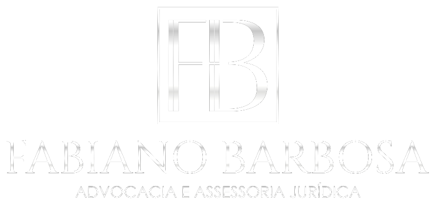

Divórcio
Consensual ou litigioso, judicial ou em cartório. Condução da partilha de bens, da definição de alimentos e de todos os desdobramentos, buscando o caminho menos desgastante possível.
Questões familiares envolvem decisões difíceis e exigem alguém que una rigor jurídico e escuta atenta. Advocacia dedicada ao Direito de Família, com atendimento 100% on-line, comunicação clara e acompanhamento próximo do início ao fim.
OAB/CE
56.768
Pós-graduado
Direito de Família
100% on-line
Todo o Brasil
Sigilo
Absoluto
Fabiano Barbosa
Advogado · OAB/CE 56.768
“Nenhuma família chega até aqui por acaso. Meu compromisso é conduzir o seu caso com seriedade técnica e cuidado humano — do primeiro contato à decisão final.”
Dr. Fabiano Barbosa · Advogado familiarista
Áreas de Atuação
Foco em um número reduzido de frentes permite profundidade técnica e dedicação real a cada caso.
Consensual ou litigioso, judicial ou em cartório. Condução da partilha de bens, da definição de alimentos e de todos os desdobramentos, buscando o caminho menos desgastante possível.
Pedido, revisão, exoneração e cobrança de valores atrasados. Atuação técnica na fixação de um valor compatível com a necessidade de quem recebe e a possibilidade de quem paga.
Guarda unilateral ou compartilhada, com foco no melhor interesse da criança e do adolescente. Também atuo em casos de descumprimento de acordo e alienação parental.
Regulamentação e revisão do regime de convivência, incluindo férias, datas comemorativas e casos de residências em cidades diferentes. Acordos claros evitam conflitos futuros.
Para Quem É
Atendo pessoas que precisam resolver uma questão familiar com segurança jurídica, sem abrir mão da discrição e sem depender de deslocamentos ou salas de espera.
Você quer proteger a rotina e o futuro dos seus filhos, mas não sabe por onde começar nem quanto isso vai custar emocionalmente. O papel do advogado aqui é organizar o processo e reduzir o desgaste.
Quando há empresa, participação societária ou bens em comum, o divórcio exige análise patrimonial cuidadosa. Discrição e cautela técnica não são opcionais — são o mínimo.
Você não tem como faltar ao trabalho para ir a um escritório. O atendimento on-line resolve isso: conversas por WhatsApp e videochamada, documentos por meio digital, sem perder qualidade.
Conversas que não avançam, promessas não cumpridas, pensão que não chega. Quando o diálogo direto se esgota, o caminho jurídico existe justamente para dar previsibilidade e força de cumprimento.
Nem todo contato precisa virar processo. Muitas pessoas procuram primeiro para entender direitos, prazos e alternativas. Essa clareza inicial já muda a forma de conduzir a própria vida.
Como Funciona
Sem burocracia desnecessária e sem termos que você não entende. Você sempre saberá em que etapa está.
Você envia uma mensagem no WhatsApp descrevendo a situação com as suas palavras. Sem formulário longo e sem julgamento.
Agendamos uma conversa on-line para entender os detalhes, os documentos existentes e o que você deseja alcançar.
Apresento os caminhos possíveis, os riscos de cada um, o tempo estimado e os honorários — tudo por escrito e sem surpresas.
Cuido do processo do início ao fim e mantenho você informado sobre cada movimentação relevante, em linguagem simples.
Resposta durante o horário comercial · Sigilo profissional garantido
O Advogado
Francisco Fabiano Barbosa Filho · OAB/CE 56.768
Advogado inscrito na Ordem dos Advogados do Brasil, Seccional Ceará, com atuação dedicada ao Direito de Família e pós-graduação na área.
A escolha por concentrar a atuação em família não foi por acaso. São processos que mexem com a rotina, com os filhos e com a estabilidade financeira de quem procura ajuda. Isso exige um advogado que domine a técnica, mas que também saiba ouvir antes de responder.
O atendimento é on-line e individualizado: você fala diretamente com o advogado responsável pelo seu caso, recebe retornos em linguagem clara e sabe exatamente o que está acontecendo em cada etapa. Discrição e sigilo profissional são a base de todo o trabalho.
Especialização em Direito de Família
Clientes em todo o território nacional
Confidencialidade em todas as etapas
Explicações sem juridiquês desnecessário
Perguntas Frequentes
Sim. A procuração pode ser assinada digitalmente, os processos tramitam eletronicamente nos tribunais e as audiências, em grande parte, ocorrem por videoconferência. Na prática, o atendimento on-line oferece o mesmo rigor técnico, com mais agilidade e sem deslocamentos.
Sim. A inscrição na OAB permite atuação em todo o território nacional, e o formato on-line viabiliza o acompanhamento de casos em qualquer estado. O local de tramitação do processo é definido pelas regras de competência aplicáveis a cada situação.
O divórcio extrajudicial, feito em cartório, é possível quando há consenso entre as partes e observados os requisitos legais — inclusive, conforme regulamentação do CNJ, em situações com filhos menores, desde que guarda, convivência e alimentos já tenham sido definidos judicialmente. A viabilidade depende da análise do caso concreto, e a presença de advogado é obrigatória.
Não existe prazo único. O tempo varia conforme o grau de consenso entre as partes, a complexidade patrimonial, a comarca e a necessidade de produção de provas. Casos consensuais tendem a ser consideravelmente mais rápidos que os litigiosos. Após analisar a sua situação, apresento uma estimativa realista — nunca uma promessa de resultado ou de prazo.
Não necessariamente. Guarda compartilhada diz respeito à divisão das responsabilidades e decisões sobre a vida do filho, e não obrigatoriamente à divisão igualitária do tempo de convivência. A residência e o regime de convivência são definidos considerando o melhor interesse da criança e a realidade de cada família.
Sim. O valor pode ser revisto — para mais ou para menos — quando há mudança comprovada na necessidade de quem recebe ou na possibilidade financeira de quem paga, por meio da ação judicial adequada. Também existem medidas específicas para cobrança de valores atrasados.
Sim. O sigilo profissional é dever legal e ético do advogado, previsto no Estatuto da Advocacia e no Código de Ética e Disciplina da OAB. Tudo o que é tratado no atendimento é confidencial, inclusive nos casos em que não há contratação posterior.
Os honorários são definidos após a análise do caso, observados os critérios do Código de Ética e Disciplina da OAB e a Tabela de Honorários da Seccional. Os valores e as condições são apresentados por escrito, em contrato, antes de qualquer início de trabalho — sem cobranças posteriores não combinadas.

Descreva a sua situação no WhatsApp. A primeira conversa serve para entender o seu caso e esclarecer os caminhos possíveis — com sigilo e sem compromisso de contratação.